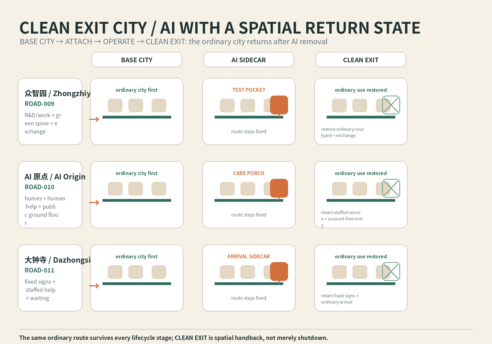
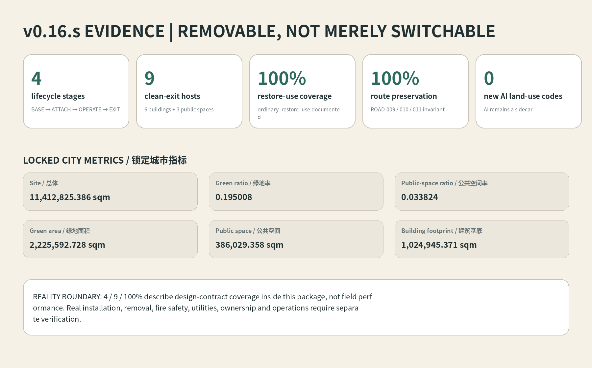
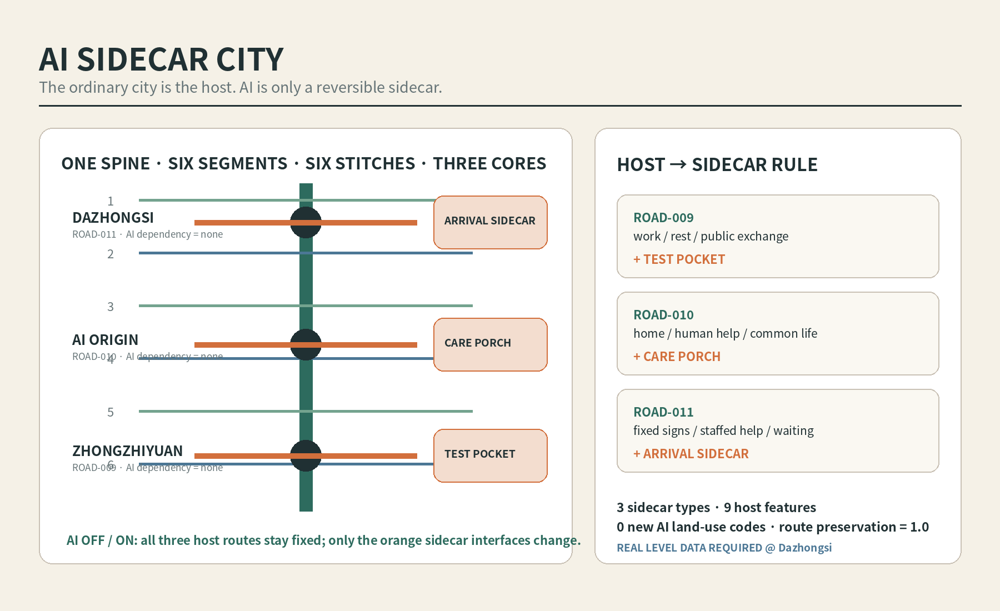
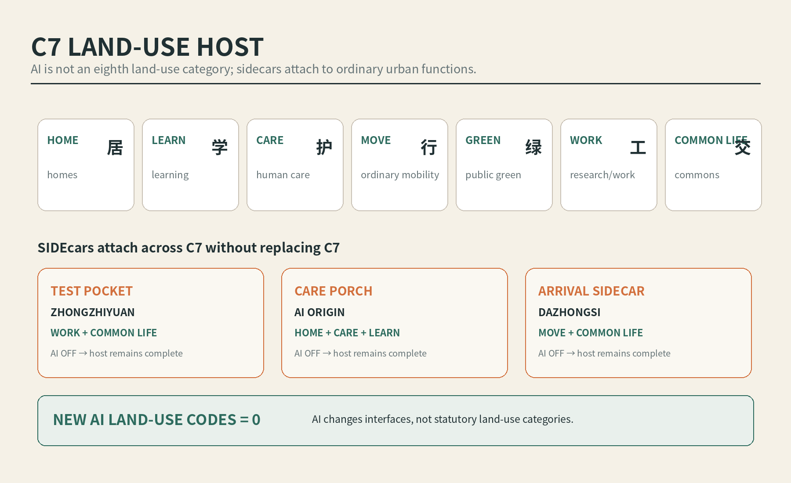
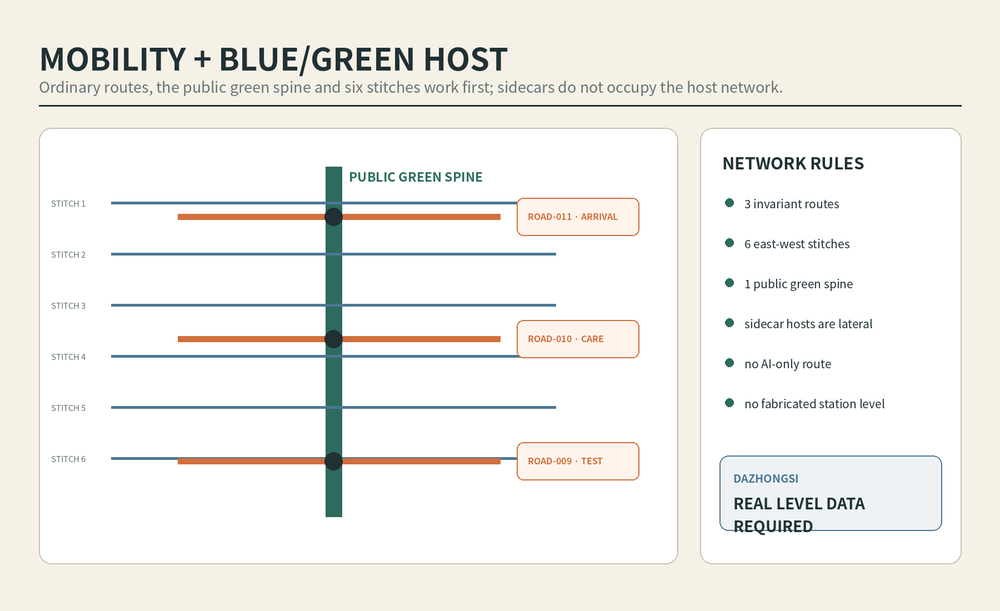

ROAD-009 · TEST POCKET
Zhongzhiyuan: remove test interfaces and restore ordinary courtyard, work/rest and exchange.
AI must not only switch off; the city must be able to remove it cleanly.
The ordinary city works first; AI attaches laterally; after exit, routes, human service, fixed wayfinding and ordinary uses remain.
Overview map · three-level scope · key areas · land-use zoning · mobility · blue-green public space · buildings · renewal projects · AI scenarios · core metrics · task coverage · self-check status · sources · assumptions

Zhongzhiyuan: remove test interfaces and restore ordinary courtyard, work/rest and exchange.
AI Origin: remove the digital layer; retain staffed help, account-free entry and public ground floor.
Dazhongsi: remove dynamic layer; retain fixed signs, staffed help and ordinary waiting; REAL LEVEL DATA REQUIRED.



